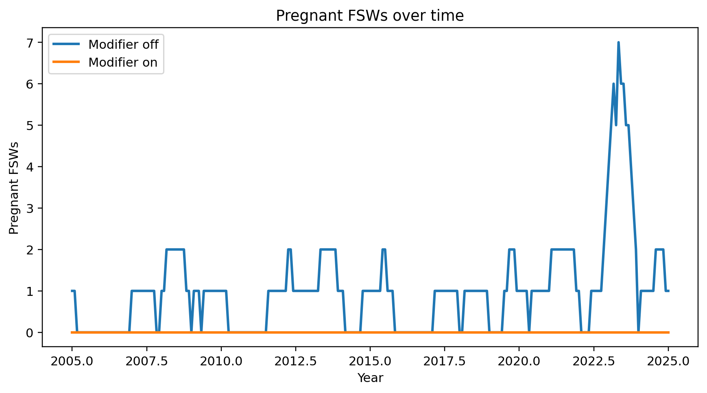
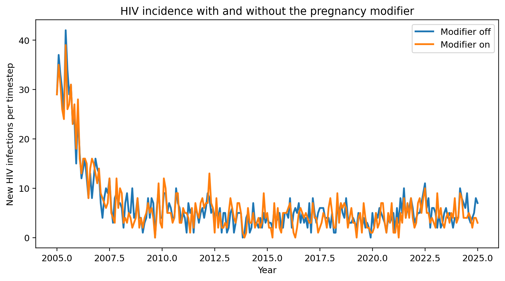

import numpy as np
import sciris as sc
import starsim as ss
import stisim as sti
import matplotlib.pyplot as plt
sc.options(dpi=110)Switching sexual-risk behaviour during pregnancy
New in v1.5.6
In many sexual-health models, pregnancy is associated with reduced sexual risk-taking: agents who were sex workers tend to exit FSW status, agents with high-concurrency partnerships tend to drop concurrency, and high-risk-group members tend to transition to lower-risk patterns. The postpartum period often sees those behaviours resume.
STIsim 1.5.6 introduces sti.PregnancyRiskReduction, a plug-in intervention that layers this dynamic on top of any StructuredSexual-style network plus an ss.Pregnancy demographics module. Each parameter is a Bernoulli over the affected pregnant sub-population, so you can configure full, partial, or zero behavioural shift.
This example compares two scenarios — one with the modifier on and one with it off — and shows how it shifts incidence during the pregnancy/postpartum window.
Setup
Tracking pregnant FSWs
PregnancyRiskReduction doesn’t publish its own per-timestep results. A small analyzer records the number of agents who are simultaneously pregnant and FSW each step. scale=True on the Result ensures the count is multiplied by sim.pars.pop_scale when reading via sim.results — so the trajectory plot is interpretable as a real population count, not an agent count.
class PregnantFswAnalyzer(ss.Analyzer):
"""Record number of pregnant FSWs each timestep (population-scaled)."""
def init_results(self):
super().init_results()
self.define_results(ss.Result('n', dtype=int, scale=True))
def step(self):
nw = self.sim.networks.structuredsexual
preg = self.sim.demographics.pregnancy
self.results['n'][self.ti] = int((preg.pregnant & nw.fsw).count())Building the sims
Both scenarios run the same HIV transmission model and same population structure; they differ only in whether PregnancyRiskReduction is included.
sim_kwargs = dict(
n_agents=10_000, dur=20, start=2005, verbose=-1, rand_seed=1,
networks=[sti.StructuredSexual(), ss.MaternalNet(), ss.BreastfeedingNet()],
demographics=[ss.Pregnancy(), ss.Deaths()],
)
def make_sim(modify_pregnancy):
hiv = sti.HIV(init_prev=0.05, beta_m2f=0.05)
interventions = [sti.HIVTest(name='hiv_test', test_prob_data=0.3),
sti.ART(coverage=0.6)]
if modify_pregnancy:
interventions.append(sti.PregnancyRiskReduction())
label = 'Modifier on' if modify_pregnancy else 'Modifier off'
return sti.Sim(diseases=[hiv], interventions=interventions,
analyzers=[PregnantFswAnalyzer()],
label=label, **sim_kwargs)
sims = ss.parallel([make_sim(False), make_sim(True)]).sims
results = {sim.label: sim for sim in sims}Initializing sim "Modifier off" with 10000 agents
Initializing sim "Modifier on" with 10000 agents
Running "Modifier off": 2005.01.01 ( 0/241) (0.00 s) ———————————————————— 0%
Running "Modifier on": 2005.01.01 ( 0/241) (0.00 s) ———————————————————— 0%
Running "Modifier off": 2006.01.01 (12/241) (0.75 s) •——————————————————— 5%
Running "Modifier on": 2006.01.01 (12/241) (0.75 s) •——————————————————— 5%
Running "Modifier off": 2007.01.01 (24/241) (1.26 s) ••—————————————————— 10%
Running "Modifier on": 2007.01.01 (24/241) (1.28 s) ••—————————————————— 10%
Running "Modifier off": 2008.01.01 (36/241) (1.78 s) •••————————————————— 15%
Running "Modifier on": 2008.01.01 (36/241) (1.80 s) •••————————————————— 15%
Running "Modifier off": 2009.01.01 (48/241) (2.31 s) ••••———————————————— 20%
Running "Modifier on": 2009.01.01 (48/241) (2.34 s) ••••———————————————— 20%
Running "Modifier off": 2010.01.01 (60/241) (2.82 s) •••••——————————————— 25%
Running "Modifier on": 2010.01.01 (60/241) (2.86 s) •••••——————————————— 25%
Running "Modifier off": 2011.01.01 (72/241) (3.34 s) ••••••—————————————— 30%
Running "Modifier on": 2011.01.01 (72/241) (3.40 s) ••••••—————————————— 30%
Running "Modifier off": 2012.01.01 (84/241) (3.87 s) •••••••————————————— 35%
Running "Modifier on": 2012.01.01 (84/241) (3.92 s) •••••••————————————— 35%
Running "Modifier off": 2013.01.01 (96/241) (4.41 s) ••••••••———————————— 40%
Running "Modifier on": 2013.01.01 (96/241) (4.47 s) ••••••••———————————— 40%
Running "Modifier off": 2014.01.01 (108/241) (4.93 s) •••••••••——————————— 45%
Running "Modifier on": 2014.01.01 (108/241) (5.00 s) •••••••••——————————— 45%
Running "Modifier off": 2015.01.01 (120/241) (5.45 s) ••••••••••—————————— 50%
Running "Modifier on": 2015.01.01 (120/241) (5.54 s) ••••••••••—————————— 50%
Running "Modifier off": 2016.01.01 (132/241) (5.99 s) •••••••••••————————— 55%
Running "Modifier on": 2016.01.01 (132/241) (6.07 s) •••••••••••————————— 55%
Running "Modifier off": 2017.01.01 (144/241) (6.53 s) ••••••••••••———————— 60%
Running "Modifier on": 2017.01.01 (144/241) (6.63 s) ••••••••••••———————— 60%
Running "Modifier off": 2018.01.01 (156/241) (7.06 s) •••••••••••••——————— 65%
Running "Modifier on": 2018.01.01 (156/241) (7.17 s) •••••••••••••——————— 65%
Running "Modifier off": 2019.01.01 (168/241) (7.59 s) ••••••••••••••—————— 70%
Running "Modifier on": 2019.01.01 (168/241) (7.70 s) ••••••••••••••—————— 70%
Running "Modifier off": 2020.01.01 (180/241) (8.11 s) •••••••••••••••————— 75%
Running "Modifier on": 2020.01.01 (180/241) (8.26 s) •••••••••••••••————— 75%
Running "Modifier off": 2021.01.01 (192/241) (8.67 s) ••••••••••••••••———— 80%
Running "Modifier on": 2021.01.01 (192/241) (8.81 s) ••••••••••••••••———— 80%
Running "Modifier off": 2022.01.01 (204/241) (9.24 s) •••••••••••••••••——— 85%
Running "Modifier on": 2022.01.01 (204/241) (9.40 s) •••••••••••••••••——— 85%
Running "Modifier off": 2023.01.01 (216/241) (9.82 s) ••••••••••••••••••—— 90%
Running "Modifier on": 2023.01.01 (216/241) (9.99 s) ••••••••••••••••••—— 90%
Running "Modifier off": 2024.01.01 (228/241) (10.40 s) •••••••••••••••••••— 95%
Running "Modifier on": 2024.01.01 (228/241) (10.59 s) •••••••••••••••••••— 95%
Running "Modifier off": 2025.01.01 (240/241) (11.00 s) •••••••••••••••••••• 100%
Running "Modifier on": 2025.01.01 (240/241) (11.20 s) •••••••••••••••••••• 100%
Pregnant FSWs over time
The clearest visual signal: with the modifier off, pregnant FSWs accumulate as the simulation runs (any female agent in her SW window who becomes pregnant remains FSW). With the modifier on, the intervention reversibly toggles paused on those agents and the count stays at zero.
yearvec = sims[0].t.yearvec
fig, ax = plt.subplots(figsize=(8, 4.5))
ax.plot(yearvec, results['Modifier off'].results.pregnantfswanalyzer.n, lw=2, label='Modifier off')
ax.plot(yearvec, results['Modifier on'].results.pregnantfswanalyzer.n, lw=2, label='Modifier on')
ax.set_xlabel('Year')
ax.set_ylabel('Pregnant FSWs')
ax.set_title('Pregnant FSWs over time')
ax.legend()
sc.figlayout()
plt.show()
HIV incidence comparison
fig, ax = plt.subplots(figsize=(8, 4.5))
for label, sim in results.items():
ax.plot(yearvec, sim.results.hiv.new_infections, label=label, lw=2)
ax.set_xlabel('Year')
ax.set_ylabel('New HIV infections per timestep')
ax.set_title('HIV incidence with and without the pregnancy modifier')
ax.legend()
sc.figlayout()
plt.show()
The “modifier on” curve typically sits below the “off” curve because pregnant women — a relatively-high-acquisition-risk subgroup — are shifted out of FSW / high-concurrency partnerships during pregnancy, reducing onward transmission both to them and from them.
What the intervention does
PregnancyRiskReduction runs every timestep and:
- Records per-agent high-water marks (
was_fsw,was_high_risk,ever_pregnant,default_concurrency) so the original behaviour can be restored after pregnancy and the intervention is a no-op for agents who have never been pregnant. - During pregnancy, samples per-agent Bernoullis to clear FSW status, reduce risk group to
default_risk_group, and zero out concurrency. - After pregnancy ends (
~pregnantfor an agent flaggedever_pregnant), restores the agent’s FSW status, risk group, and concurrency from the high-water mark. No dependency on a breastfeeding state.
The defaults assume 100% behavioural shift; tune each Bernoulli to match locally-observed transitions:
sti.PregnancyRiskReduction(
fsw_redux=ss.bernoulli(p=0.7), # 70% of pregnant FSWs exit FSW
high_risk_redux=ss.bernoulli(p=0.5), # 50% drop to default risk group
concurrency_redux=ss.bernoulli(p=0.9),
)Caveats
- Restoration fires immediately when an agent’s pregnancy ends. The intervention has no built-in postpartum window — if you want behaviour to stay reduced for some months after birth, wrap or subclass the intervention.
- The intervention writes directly to network state (
nw.fsw,nw.risk_group,nw.concurrency). It assumes those attributes exist on the network identified bynetwork_name(default'structuredsexual'). - This is a behavioural shift on top of an otherwise unchanged network. If you want pregnancy to also break specific partnerships (e.g. force a partner separation), do that in a downstream intervention.